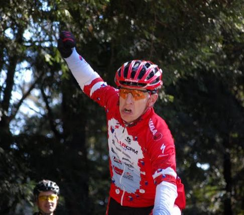

Week 8 Results: Alba Road
21 Nov 2009
|
2009 Low-Key Hillclimbs Week 8 Results: Alba Road 21 Nov 2009 |
|  |
| William Von Kaenel (Los Gatos) conquers Alba (Ryan PC Gibson) |
It was a chilly morning in Ben Lomond. The car thermometer was reading 42F at 9am. But Low-Key was ready, as coordinator Pat Parseghian stuffed her car with rider jackets for riders to descend back down the hill afterwards. By the time the first group rolled out from the registration area around 10:20 am, it had turned into a perfect cool fall morning for climbing.
And what a climb! For those less familiar with Alba, which made it's first-ever appearance with Low-Key, it's a rude introduction as after precious little roadway one is confronted with a most unsubtle upward grade. Riders struggled to avoid going too deeply into the red here, as with an average grade of an impressive 10.4%, Alba shows no mercy to those who have nothing left to offer.
But Low-Key series leader Justin Lucke had plenty to offer, finishing from the first starting group in an impressive 25:05. Tom Ritchey is still smiling from his Palo Alto home, however, as his 23:51 from 1975 remained unchallenged. Justin would have finished a strong seventh in that climb more than 24 years ago... just ahead of one Mike Jacoubowski. There were some heavy hitters there that day.
But with his fantastic result, Justin solidified his lead in the men's standings for this year. Carl Nielson finished second on Alba and is also second in the overall, while Greg McQuaid finished fourth, behind Tim Clark, to move up to third overall. But at Hamilton will result in a fifth result counting in the overall score, so a lot can change.
On the women's side, Sisters and Misters of No Mercy was a force to be reckoned with. Too strong, in fact, as Christy Cowley, Holly Harris, and Low-Key series leader Janet Martinez swept the top three positions (with teammate Janet Wagnot, formerly on a tandem with Brian Lucido, finishing a strong sixth). As a result of such strong representation, the women's median time was on the low side this week, and scores were generally low as a result. Janet held on to her overall lead, however, with Mary Ellen Allen still in second, Christy Cowley now in third. That's 1-2-3 for Sisters and Misters.
In the team competition, despite the reduced women's scores, Sisters and Misters took top score for the week with the local squad Bike Trip finishing less than a point behind in second. Bike Trip actually scored more points towards the overall, however, due to volunteer Nils Takkenen's contribution of points there. San Jose was third on the week, while LGBRC and Western Wheelers are 2-3 in the overall rankings. It's close, though, ever so close, with less than 16 points separating third and first in the overall ranking.
Notable this week: Gary "the" Gellin crossing the tape with a super-impressive sub-30 minute time on foot, leading Brian "no-shirt" Lucido who also scored over 100 points running. Brian has shown amazing versatility this year: finishing third on the bike at Old La Honda, riding a mixed tandem to over 100 points up Diablo, then ditching the bike completely for Alba. Can we expect to see Brian on a unicycle at Hamilton? I wouldn't be surprised.
Also, we had some great junior results this week! Eileen Callahan surged into the overall lead in the highly contested "Tandem 5-and-under" category, a mere 0.03 points ahead of former leader Meredith Nader. Meanwhile Joel Guerra climbed Alba to take sole lead of the Junior 13-and-under category. And 2009 overall junior leader Andre Swart broke 100 points for the third climb in a row with a super-impressive result on this challenging climb.
Next up: just a few days away, this Thursday's traditional Thanksgiving series finish: Mount Hamilton Road. This one's a real challenge to the endurance. We hope to see you there!
Thanks to coordinator Pat Parseghian, with help from Lisa Emmerich, Lori Fabris, Ryan Gibson, Christine Holmes, Martin Hyland, Howard Kveck, Ingrid McCarty, Nils Tikkanen, and David Vrane for making today's climb possible!median time = 18:36
pl # rider team category time mph fph score 1 6 Bill Bushnell Low-Key Hybrid 18:36 12.10 6661 100.00
median time = 33:12
pl # rider team category time mph fph score 1 40 Justin Lucke LGBRC 35+ 25:05 8.97 4940 132.39 2 163 Carl Nielson Sr's & Mr's of No Mercy 45+ 25:59 8.66 4768 127.81 3 18 Tim Clark Metrigear 40+ 26:05 8.63 4750 127.32 4 71 Greg McQuaid San Jose Bike Club 35+ 26:09 8.60 4738 126.99 5 401 Jacob Berkman 27:02 8.32 4583 122.84 6 1 Dan Connelly Low-Key 40+ 27:19 8.24 4536 121.57 7 283 Geoff Drake Bike Trip 50+ 27:39 8.14 4481 120.10 8 315 Tom Gardin 45+ 27:46 8.10 4462 119.60 9 101 Mark Edwards Bike Trip 45+ 27:50 8.08 4451 119.31 10 7 James Porter Western Wheelers 3 28:11 7.98 4396 117.83 11 80 Bill Davis Google 25-29 28:35 7.87 4335 116.18 12 144 Andy Brisnehan Western Wheelers 50+ 28:45 7.83 4310 115.51 13 110 Shon Grabbe San Jose Bike Club 35+ 28:46 7.82 4307 115.44 14 201 Rune Dahl Western Wheelers 45+ 29:03 7.75 4265 114.31 15 605 Menko Johnson Pen Velo/Pomodoro 35+ 29:32 7.62 4195 112.44 16 603 Gary Gellin Sr's & Mr's of No Mercy Runner 29:41 7.58 4174 111.88R 17 609 Julian Sunn Santa Cruz Endurance 20-24 29:42 7.58 4172 111.81 18 98 Bruce Gardner Sr's & Mr's of No Mercy 35+ 29:49 7.55 4155 111.38 19 259 Matt Wocasek Bike Trip 3 29:56 7.52 4139 110.94 20 291 Tim Sawyer Bike Trip 45+ 30:16 7.43 4094 109.72 21 192 Michael Simos LGBRC 35+ 30:26 7.39 4071 109.12 22 619 Klaus Fleischmann 40+ 30:43 7.33 4034 108.11 23 74 Benoit Pelczar Bike Trip 35+ 31:01 7.25 3995 107.07 23 316 Christian Paquet Doogie 50+ 31:01 7.25 3995 107.07 25 136 Fred Egley Dos Egley's 45+ 31:08 7.23 3980 106.66 26 120 Peter Mehlitz 45+ 31:52 7.06 3888 104.21 27 214 Brian Lucido Sr's & Mr's of No Mercy 30+ 32:05 7.01 3862 103.51R 28 113 Kevin Comerford Commuter 32:06 7.01 3860 103.45 29 59 Scott Martin Bike Trip 50+ 32:19 6.96 3834 102.76 30 613 Q.P. Liu 40+ 32:36 6.90 3801 101.87 31 402 Bill Preucel Sr's & Mr's of No Mercy 45+ 32:38 6.89 3797 101.76 32 24 Dennis Pederson Bike Trip 45+ 32:51 6.85 3772 101.09 33 607 Rick Ferrell 50+ 32:55 6.84 3764 100.89 34 73 Vince Cummings 33:01 6.81 3753 100.58 35 137 Neal Herman Spike the Wonder Dog 50+ 33:04 6.80 3747 100.43 36 114 Andre Swart Ryro Junior 33:06 6.80 3743 100.33 37 347 Matt Beadon 30+ 33:19 6.75 3719 99.67 38 56 David Vrane SLACer 45+ 33:39 6.69 3682 98.69 39 96 Phil Dubach Western Wheelers 35+ 33:43 6.67 3675 98.49 40 381 Gregory Fuoco Democrats 33:47 6.66 3667 98.30 41 109 Shance Ordell Western Wheelers 35+ 33:57 6.63 3649 97.82 42 363 James Dudley 34:22 6.55 3605 96.63 43 132 George Junour Santa Cruz 34:24 6.54 3602 96.54 44 269 Jeff Shute Google 30+ 35:04 6.42 3533 94.70 45 35 Stephen Fong San Jose Bike Club 40+ 35:09 6.40 3525 94.48 46 69 Nic Brummell Atlas 45+ 35:12 6.39 3520 94.34 47 400 Chris Toshok RAMROD 5 35:32 6.33 3487 93.46 48 54 Barry Burr Two legs to stand on 50+ 35:58 6.26 3445 92.33 49 122 Mark Powers Pen Velo/Pomodoro 50+ 36:11 6.22 3424 91.78 50 146 William Von Kaenel LGBRC 50+ 36:46 6.12 3370 90.32 51 338 George Lee 37:12 6.05 3331 89.27 52 57 John Kastel Death Valley 45+ 37:38 5.98 3292 88.24 53 64 Han Wen 40+ 38:00 5.92 3261 87.39 54 38 Thomas Preisler LGBRC 50+ 39:02 5.76 3174 85.08 55 409 Mike Ahern LGBRC 40+ 39:24 5.71 3145 84.29 56 601 Todd Bryan Western Wheelers 40+ 39:40 5.67 3124 83.72 57 611 Jeremy Page Santa Cruz Endurance 35+/Fixed 39:43 5.67 3120 83.61F 58 119 Gary Swart Ryro Senior 39:47 5.66 3114 83.47 59 51 Richard Contreras 50+ 40:17 5.59 3076 82.44 60 21 Kley Cardona ACTC 45+ 40:20 5.58 3072 82.33 61 535 Jim Tappan Self 50+ 40:44 5.52 3042 81.53 62 509 Miguel Angel Alvarez PROJOB 40+ 41:18 5.45 3000 80.41 63 251 Christopher Olson Google 5 42:14 5.33 2934 78.63 64 117 Bob Corman Spike the Wonder Dog 50+ 43:04 5.22 2877 77.11 65 371 Jeroem Meiier 35+ 43:14 5.20 2866 76.81 66 253 Chris Chang Old & slow 45+ 43:15 5.20 2865 76.78 67 306 Joseph Maurer SF Randonneurs 60+ 44:08 5.10 2807 75.25 68 292 Giles Douglas Google 35+ 44:13 5.09 2802 75.10 69 126 John Conklin 40+ 45:34 4.94 2719 72.88 70 318 Wink Saville Google 60+ 46:10 4.87 2684 71.93 71 11 Doug Simpkinson Webcor/Alto Velo 35+ 56:28 3.98 2194 58.81 72 91 Patrick Callahan Western Wheelers 40+ 58:47 3.83 2108 56.49T 73 615 Joel Guerra Junior 13 65:45 3.42 1884 50.51 F : Fixed or 1-speed R : runner T : tandem score
median time = 38:31
pl # rider team category time mph fph score 1 39 Christy Cowley Sr's & Mr's of No Mercy 40+ 34:36 6.50 3581 111.32 2 99 Holly Harris Sr's & Mr's of No Mercy 40+ 34:41 6.49 3572 111.05 3 102 Janet Martinez Sr's & Mr's of No Mercy 40+ 35:19 6.37 3508 109.06 4 37 Laura Hipp Western Wheelers 36:58 6.09 3352 104.19 5 245 Laura Egley Dos Egley's 45+ 40:04 5.62 3092 96.13 6 517 Janet Wagner Sr's & Mr's of No Mercy Tandem 40:49 5.51 3036 94.37 7 153 Karis McFarlane Silicon Valley Triathlon Commuter 46:41 4.82 2654 82.51 8 61 Lisa Emmerich Team Rwanda 45+ 48:31 4.64 2554 79.39 9 617 Eileen Callahan Tandem/5 And Under 58:47 3.83 2108 56.49T T : tandem score
pl team score scoring 1 Sr's & Mr's of No Mercy 351.06 (Carl Nielson, Gary Gellin, Bruce Gardner) 2 Bike Trip 350.35 (Geoff Drake, Mark Edwards, Matt Wocasek) 3 Western Wheelers 347.65 (James Porter, Andy Brisnehan, Rune Dahl) 4 San Jose Bike Club 336.91 (Greg McQuaid, Shon Grabbe, Stephen Fong) 5 LGBRC 331.83 (Justin Lucke, Michael Simos, William Von Kaenel) 6 Google 289.51 (Bill Davis, Jeff Shute, Christopher Olson) 7 Low-Key 221.57 (Dan Connelly, Bill Bushnell) 8 Pen Velo/Pomodoro 204.22 (Menko Johnson, Mark Powers) 9 Dos Egley's 202.80 (Fred Egley, Laura Egley) 10 Santa Cruz Endurance 195.43 (Julian Sunn, Jeremy Page) 11 Ryro 183.80 (Andre Swart, Gary Swart) 12 Spike the Wonder Dog 177.54 (Neal Herman, Bob Corman) 13 Metrigear 127.32 (Tim Clark) 14 Doogie 107.07 (Christian Paquet) 15 SLACer 98.69 (David Vrane) 16 Democrats 98.30 (Gregory Fuoco) 17 Santa Cruz 96.54 (George Junour) 18 Atlas 94.34 (Nic Brummell) 19 RAMROD 93.46 (Chris Toshok) 20 Two legs to stand on 92.33 (Barry Burr) 21 Death Valley 88.24 (John Kastel) 22 Silicon Valley Triathlon 82.51 (Karis McFarlane) 23 ACTC 82.33 (Kley Cardona) 24 Self 81.53 (Jim Tappan) 25 PROJOB 80.41 (Miguel Angel Alvarez) 26 Team Rwanda 79.39 (Lisa Emmerich) 27 Old & slow 76.78 (Chris Chang) 28 SF Randonneurs 75.25 (Joseph Maurer) 29 Webcor/Alto Velo 58.81 (Doug Simpkinson)
{kind=link}